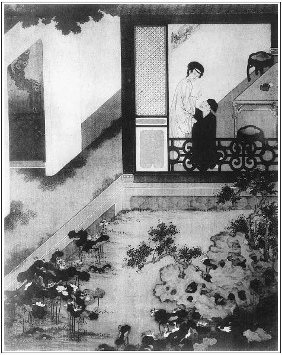

張回此回瓶兒云「你就如醫奴的藥」一語，後文「情感」回中，一字不易。遙遙對照，是作者針線處。
正寫金蓮，忽插入玉樓，奇矣。今又正寫瓶兒，忽插敬濟，艷妙章法。然此露敬濟之來，下回遇金蓮，方寫敬濟之事，則又對照中故為參差處。
寫西門見抄報吃驚語，又與苗青吃驚處，一字不易。見得同類小人，一鼻孔出氣也。
正寫瓶兒，錦樣的文字，乃忽作迅雷驚電之筆，一漾開去。下謂其必如何來保至東京矣。不謂其藏過迅雷驚電，忽又柳絲花朵。說竹山一段勾挑話頭，文字奇絕，總不由人意慮得到。
夫寫瓶兒必寫竹山，何哉？見得淫婦人偷情，其所愉之人，大抵一時看中，便千方百計引之入室，便思車來賄遷。其意本為淫耳，豈能為彼所偷之人割鼻截發，誓死相守哉！故西門一有事，而竹山之說已行。竹山一入室，瓶兒之意已中。然而共於西門，亦不過如斯，有何不解之情哉！寫淫婦人至此，令人心灰過半矣！是蓋又於人情中討出來，不特文字生法而已，瓶兒悔寄物心，至此回方說出。然則竹山不去，瓶兒不來，月娘房中之物尚肯一念為他人物乎？則寫竹山又為月娘寫也。
竹山必開藥店，蓋特特刺入西門慶眼內也。
寫瓶兒即中竹山之計中者，見得瓶兒數日追悔已久。即未有竹山之讒，久已心中深恨牆頭之物輕輕脫去。而西門慶過河拆橋之態，久已於冷處睃入眼中。如燒靈日瓶兒磕頭，西門一手拉起，一手接酒。其前後易轍處，已全露驕矜之態。故屢屢催促者，此意也。一旦竹山開口，正中素心，宜乎有此一舉。然而寫一竹山，將前情一一襯出，故是作者襯疊文字的花樣。乃看者多向竹山身上討生活，豈不是《西廂》上呆講鄭恆的一樣癡人說夢？
蔣文蕙者，聞悔而來者也。明襯瓶兒之悔，而蔣竹山者，又將逐散也。言雖暫合，而西門之元惡車側，其能久乎？必至於逐散也。夫將逐散之人，不過借其一為襯疊點染耳，豈真是正經腳色，而令為官哥之來派哉？且一百回絕不結果，照應可知矣。
官哥結胎於此。看他寫竹山診脈，云「似虐非虐，似寒非寒，白日則倦怠嗜臥，精神短少，夜晚神不守舍，夢與鬼交。若不早治，久而變為他疾」云云，明說官哥，乃子虛借鬼魅之氣，結胎於瓶兒腹中。其「白日」云云，產婦初孕之常態。「夜晚」云云，不明不暗，結鬼胎之原由。「若不早治」云云，乃竹山之語也。明言子虛化鬼胎於此，而借竹山一白出耳。奈之何俱為其所瞞也！
詩曰：
早知君愛歇，本自無容妒；
誰使恩情深，今來反相誤。
愁眠羅帳曉，泣坐金閨暮；
獨有夢中魂，猶言意如故。

話說五月二十日，帥府周守備生日。西門慶封五星分資、兩方手帕，打選衣帽齊整，騎疋大白馬，四個小廝跟隨，往他家拜壽。席間也有夏提刑、張團練、荊千戶、賀千戶一班武官兒飲酒，鼓樂迎接，搬演戲文。玳安接了衣裳，回馬來家。到日西時分，又騎馬去接，走到西街口上，撞見馮媽媽，問道：「馮媽媽那裡去？」馮媽媽道：「你二娘使我來請你爹。雇銀匠整理頭面完備，今日送來，請你爹那裡瞧去。你二娘還和你爹說話哩！」玳安道：「俺爹今日在守備府周老爺處吃酒，我如今接去。你老人家回罷。等我到那裡，對爹說就是了。」馮媽媽道：「累你好歹說聲，你二娘等著哩！」這玳安打馬逕到守備府。眾官員正飲酒間，玳安走到西門慶席前，說道：「小的回馬家來時，在街口撞遇馮媽媽，二娘使了來說，雇銀匠送了頭面來了，請爹瞧去，還要和爹說話哩。」西門慶聽了，就要起身，那周守備那裡肯放，攔門拿巨杯相勸。西門慶道：「蒙大人見賜，寧可飲一杯，還有些小事，不能盡情，恕罪，恕罪！」於是一飲而盡，辭周守備上馬，逕到李瓶兒家。
婦人接著，茶湯畢，西門慶吩咐玳安回馬家去，明日來接。玳安去了。李瓶兒叫迎春盒兒內取出頭面來，與西門慶過目。黃烘烘火焰般一副好頭面，收過去，單等二十四日行禮，出月初四日准娶。婦人滿心歡喜，連忙安排酒來，和西門慶暢飲開懷。張眉一路寫去，總覺滿心滿意之筆，為下文一冷反照。故知與前將娶玉樓時別金蓮文字遙對也。吃了一回，使丫鬟房中搽抹涼席乾淨。兩個在紗帳之中，香焚蘭麝，衾展鮫綃，脫去衣裳，並肩疊股，飲酒調笑。良久，春色橫眉，淫心蕩漾。西門慶先和婦人雲雨一回，然後乘著酒興，坐於床上，令婦人橫躺於衽席之上，與他品簫。但見：
不竹不絲不石，肉音別自唔咿。流蘇瑟瑟碧紗垂，辨不出宮商角徵。一點櫻桃欲綻，纖纖十指頻移。深吞添吐兩情癡，不覺靈犀味美。
西門慶醉中戲問婦人：「當初花子虛在時，也和他幹此事不幹？」婦人道：「他逐日睡生夢死，奴那裡耐煩和他幹這營生！他每日只在外邊胡撞，就來家，奴等閒也不和他沾身。況且老公公在時，和他另在一間房睡著，我還把他罵的狗血噴了頭。好不好，對老公公說了，繡眉瓶兒與老公公頗相好，開口不忘。要打倘棍兒。奴與他這般頑耍，可不磣殺奴罷了！誰似冤家這般可奴之意，就是醫奴的藥一般。張夾謹對「情感」一回，一字不移可想。白日黑夜，教奴只是想你。」兩個耍一回，又幹了一回。旁邊迎春伺候下一個小方盒，都是各樣細巧果品，小金壺內滿泛瓊漿。從黃昏掌上燈燭，且干且歇，直耍到一更時分。只聽外邊一片聲打的大門響，使馮媽媽開門瞧去，原來是玳安來了。西門慶道：「我吩咐明日來接，這咱晚又來做甚麼？」因叫進來問他。那小廝慌慌張張走到房門首，因西門慶與婦人睡著，又不敢進來，只在簾外說道：「姐姐、姐夫都搬來了，張夾突插一筍。許多箱籠在家中。大娘使我來請爹，快去計較話哩。」這西門慶聽了，只顧猶豫：「這咱晚，端的有甚緣故？須得到家瞧瞧。」連忙起來。婦人打發穿上衣服，做了一盞暖酒與他吃。
打馬一直到家，只見後堂中秉著燈燭，女兒女婿都來了，堆著許多箱籠床帳傢伙，先吃了一驚，因問：「怎的這咱來家？」女婿陳敬濟磕了頭，哭說：「近日朝中，俺楊老爺被科道官參論倒了。聖旨下來，拿送南牢問罪。門下親族用事人等，都問擬枷充軍。昨日府中楊干辦連夜奔來，透報與父親知道。父親慌了，教兒子同大姐和些傢伙箱籠，且暫在爹家中寄放，躲避些時。他便起身往東京我姑娘那裡，打聽消息去了。待事寧之日，恩有重報，不敢有忘。」西門慶問：「你爹有書沒有？」陳敬濟道：「有書在此。」向袖中取出，遞與西門慶。折開觀看，上面寫道：
眷生陳洪頓首書奉大德西門慶親家台覽：餘情不敘。茲因北虜犯邊，搶過雄州地界，兵部王尚書不發救兵，失誤軍機，連累朝中楊老爺，繡旁猶護局。俱被科道官參劾太重。聖旨惱怒，拿下南牢監禁，會同三法司審問。其門下親族用事人等，俱照例發邊衛充軍。生一聞消息，舉家驚惶，無處可投，先打發小兒、令愛，隨身箱籠家活，暫借親家府上寄寓。生即上京，投在姐夫張世廉處，打聽示下。待事務寧帖之日，回家恩有重報，不敢有忘。誠恐縣中有甚聲色，繡旁周密。生令小兒外具銀五百兩，相煩親家費心處料，容當叩報沒齒不忘。燈下草書，不宣。
仲夏二十日張眉又是六月二十日，重沓很好。洪再拜
西門慶看了，慌了手腳，教吳月娘安排酒飯，管待女兒、女婿。就令家下人等，打掃廳前東廂房三間，張夾記清。與他兩口兒居住。把箱籠細軟都收拾月娘上房來。繡旁伏。陳敬濟取出他那五百兩銀子，交與西門慶打點使用。西門慶叫了吳主管來，與他五百兩銀子，教他連夜往縣中承行房裡，抄錄一張東京行下來的文書邸報來看。上面端的寫的是甚言語：
兵科給事中宇文虛中等一本，懇乞宸斷，亟誅誤國權奸，以振本兵，以消虜患事：臣聞夷狄之禍，自古有之。周之獫狁，漢之匈奴，唐之突厥，迨及五代而契丹浸強，至我皇宋建國，大遼縱橫中原者已非一日。然未聞內無夷狄而外萌夷狄之患者。
語云：霜降而堂鐘鳴，雨下而柱礎潤。以類感類，必然之理。譬若病夫，腹心之疾已久，元氣內消，風邪外入，四肢百骸，無非受病，雖盧扁莫之能救，焉能久乎？繡眉絕妙議論，當選入名臣奏疏中。今天下之勢，正猶病夫尪羸之極矣。君猶元首也，輔臣猶腹心也，百官猶四肢也。
陛下端拱於九重之上，百官庶政各盡職於下。元氣內充，榮衛外扞，則虜患何由而至哉？今招夷虜之患者，莫如崇政殿大學士蔡京者：本以憸邪奸險之資，濟以寡廉鮮恥之行，讒諂面諛，上不能輔君當道，贊元理化；下不能宣德布政，保愛元元。徒以利祿自資，希寵固位，樹黨懷奸，蒙蔽欺君，中傷善類。忠士為之解體，四海為之寒心。聯翩朱紫，萃聚一門。邇者河湟失議，主議伐遼，內割三郡，郭藥師之叛，卒使金虜背盟，憑陵中原。此皆誤國之大者，皆由京之不職也。王黼貪庸無賴，行比俳優。蒙京汲引，荐居政府，未幾謬掌本兵。惟事慕位苟安，終無一籌可展。乃者張達殘於太原，為之張皇失散。今虜犯內地，則又挈妻子南下，為自全之計。其誤國之罪，可勝誅戮？楊戩本以紈褲膏粱叨承祖蔭，憑籍寵靈典司兵柄，濫膺閫外，大奸似忠，怯懦無比。此三臣者，皆朋黨固結，內外蒙蔽，為陛下腹心之蠱者也。數年以來，招災致異，喪本傷元，役重賦煩，生民離散，盜賊猖獗，夷虜犯順，天下之膏腴已盡，國家之綱紀廢弛，雖擢發不足以數京等之罪也。臣等待罪該科，備員諫職，徒以目擊奸臣誤國，而不為皇上陳之，則上辜君父之恩，下負平生所學。伏乞宸斷，將京等一干黨惡人犯，或下廷尉，以示薄罰；或致極典，以彰顯戮；或照例枷號，或投之荒裔，以御魑魅。庶天意可回，人心暢快，國法以正，虜患自消。天下幸甚！臣民幸甚！
奉聖旨：「蔡京姑留輔政。王黼、楊戩著拿送三法司，會問明白來說。欽此欽遵。續該三法司會問過，並黨惡人犯王黼、楊戩，本兵不職，縱虜深入，荼毒生民，損兵折將，失陷內地，律應處斬。手下壞事家人、書辦、官掾、親家董升、盧虎、楊盛、龐宣、韓宗仁、陳洪、黃玉、劉盛、趙弘道等，查出有名人犯，俱問擬枷號一個月，滿日發邊衛充軍。」張夾便撰一表文如見。
西門慶不看，萬事皆休；看了耳邊廂只聽颼的一聲，魂魄不知往那裡去了。張夾此處又與苗青文中一字不差。就是：
驚傷六葉連肝肺，嚇壞三毛七孔心。
當下即忙打點金銀寶玩，馱裝停當，把家人來保、來旺叫到臥房中，悄悄吩咐，如此這般：「雇頭口星夜上東京打聽消息。不消到你陳親家老爹下處。但有不好聲色，取巧打點停當，速來回報。」又與了他二人二十兩銀子。絕早五更雇腳夫起程，上東京去了，不在話下。
西門慶通一夜不曾睡著，到次日早，吩咐來昭、賁四，把花園工程止住，各項匠人都且回去，不做了。每日將大門緊閉，家下人無事亦不許往外去。西門慶只在房裡走來走去，憂上加憂，悶上加悶，如熱地蜒蚰一般，把娶李瓶兒的勾當丟在九霄雲外去了。張夾一冷，妙絕。吳月娘見他愁眉不展，面帶憂容，只得寬慰他，說道：「他陳親家那邊為事，各人冤有頭債有主，你也不需焦愁如此。」西門慶道：「你婦人都知道些甚麼？陳親家是我的親家，女兒、女婿兩個孽障搬來咱家住著，平昔街坊鄰舍惱咱的極多，常言：機兒不快梭兒快，打著羊駒驢戰。倘有小人指搠，拔樹尋根，你我身家不保。」繡眉強梁人結怨，何當不自知。張夾小人何償不自知。
正是：
關門家裡坐，禍從天上來。
這裡西門慶在家納悶，不題。張夾忽然又煞住。文字奇絕。
且說李瓶兒等了一日兩日，不見動靜，一連使馮媽媽來了兩遍，大門關得鐵桶相似。等了半日，沒一個人牙兒出來，竟不知怎的。看看到二十四日，李瓶兒又使馮媽媽送頭面來，就請西門慶過去說話。叫門不開，立在對過房簷下等。少頃，只見玳安出來飲馬，看見便問：「馮媽媽，你來做甚麼？」馮媽媽說：「你二娘使我送頭面來，怎的不見動靜？請你爹過去說話哩。」玳安道：「俺爹連日有些事兒，不得閒。你老人家還拿頭面去，等我飲馬回來，對俺爹說就是了。」馮媽媽道：「好哥哥，我這在裡等著，你拿進頭面去和你爹說去。你二娘那裡好不惱我哩！」這玳安一面把馬拴下，走到裡邊，半日出來道：「對爹說了，頭面爹收下了，教你上覆二娘，再待幾日兒，我爹出來往二娘那裡說話。」這馮媽媽一直走來，張夾此所為不通風也。回了婦人話。婦人又等了幾日，看看五月將盡，六月初旬，朝思暮盼，音信全無，夢攘魂勞，佳期間阻。正是：
懶把蛾眉掃，羞將粉臉勻。
滿懷幽恨積，憔悴玉精神。
婦人盼不見西門慶來，每日茶飯頓減，精神恍惚。到晚夕，孤眠枕上展轉躊躕。忽聽外邊打門，彷彿見西門慶來到。婦人迎門笑接，攜手進房，問其爽約之情，各訴衷腸之話。綢繆繾綣，徹夜歡娛。雞鳴天曉，便抽身回去。婦人恍然驚覺，大呼一聲，精魂已失。馮媽媽聽見，慌忙進房來看。婦人說道：「西門他爹剛才出去，你關上門不曾？」馮媽媽道：「娘子想得心迷了，那裡得大官人來？影兒也沒有！」婦人自此夢境隨邪，夜夜有狐狸假名抵姓，攝其精髓。漸漸形容黃瘦，飲食不進，臥床不起。馮媽媽向婦人說，請了大街口蔣竹山來看。其人年不上三十，生的五短身材，人物飄逸，極是輕浮狂詐。請入臥室，婦人則霧鬢雲鬟，繡眉「則」字下得妙，已有更端之意。擁衾而臥，繡旁病態嫣甚。似不勝憂愁之狀。茶湯已罷，丫鬟安放褥墊。竹山就床診視脈息畢，因見婦人生有姿色，繡旁醫者常情。便開口說道：「學生適診病源，娘子肝脈弦出寸口而洪大，厥陰脈出寸口久上魚際，主六欲七情所致。張夾便如一岐黃者面談，文情狡猾至此。陰陽交爭，乍寒乍熱，似有鬱結於中而不遂之意也。似瘧非瘧，似寒非寒，白日則倦怠嗜臥，精神短少；夜晚神不守舍，夢與鬼交。張夾官哥結胎在此。子虛投胎在此。若不早治，久而變為骨蒸之疾，必有屬纊之憂矣。可惜，可惜！」婦人道：「有累先生，俯賜良劑。奴好了，重加酬謝。」竹山道：「學生無不用心，娘子若服了我的藥，必然貴體全安。」說畢起身。這裡送藥金五星，使馮媽媽討將藥來。婦人晚間吃了藥下去，夜裡得睡，便不驚恐。漸漸飲食加添，起來梳頭走動。那消數日，精神復舊。繡眉一醫便好，情淺可知。
一日，安排了一席酒餚，備下三兩銀子，使馮媽媽請過竹山來張夾向必請來。相謝。蔣竹山自從與婦人看病，懷覬覦之心已非一日。一聞其請，即具服而往。延之中堂，婦人盛妝出見，道了萬福，茶湯兩換，請入房中。酒餚已陳，麝蘭香藹。小丫鬟繡春在旁，描金盤內托出三兩白金。婦人高擎玉盞，向前施禮，說道：「前日，奴家心中不好，蒙賜良劑，服之見效。今粗治了一杯水酒，請過先生來知謝知謝。」竹山道：「此是學生分內之事，理當措置，何必計較！」因見三兩謝禮，說道：「這個學生怎麼敢領？」婦人道：「些須微意，不成禮數，萬望先生笑納。」辭讓了半日，竹山方才收了。婦人遞酒，安下坐次。飲過三巡，竹山偷眼睃視婦人，粉妝玉琢，嬌艷驚人，先用言以挑之，因道：「學生不敢動問，娘子青春幾何？」婦人道：「奴虛度二十四歲。」竹山道：「似娘子這等妙年，生長深閨，處於富足，何事不遂，而前日有此鬱結不足之病？」繡旁勾挑亦微。婦人聽了，微笑道：「不瞞先生，奴因拙夫棄世，家事蕭條，獨自一身，繡眉病根在此，故往往謂西門慶為醫奴之藥。憂愁思慮，何得無病！」竹山道：「原來娘子夫主歿了。多少時了？」婦人道：「拙夫從去歲十一月得傷寒病死了，今已八個月。」竹山道：「曾吃誰的藥來？」繡旁人死問病，妙。婦人道：「大街上胡先生。」竹山道：「是那東街上劉太監房子住的胡鬼嘴兒？他又不是我太醫院出身，知道甚麼脈，娘子怎的請他？」張夾如畫。婦人道：「也是因街坊上人薦舉請他來看。還是拙夫沒命，不干他事。」竹山又道：「娘子也還有子女沒有？」婦人道：「兒女俱無。」竹山道：「可惜娘子這般青春妙齡之際，獨自孀居，又無所出，何不尋其別進之路？甘為幽悶，豈不生病！」繡眉忙忙中又著一段諧語，令人失笑，一味弄筆。婦人道：「奴近日也講著親事，早晚過門。」竹山便道：「動問娘子與何人作親？」婦人道：「是縣前開生藥鋪西門大官人。」竹山聽了道：「苦哉，苦哉！娘子因何嫁他？學生常在他家看病，最知詳細。此人專在縣中包攬說事，廣放私債，販賣人口，家中丫頭不算，大小五六個老婆，著緊打倘棍兒，稍不中意，就令媒人領出賣了。就是打老婆的班頭，坑婦女的領袖。娘子早是對我說，不然進入他家，如飛蛾投火一般，坑你上不上，下不下，那時悔之晚矣。況近日他親家那邊為事幹連，在家躲避不出，房子蓋的半落不合的，都丟下了。東京關下文書，坐落府縣拿人。到明日他蓋這房子，多是入官張夾動瓶兒處在此。抄沒的數兒。娘子沒來由嫁他做甚？」一篇話把婦人說的閉口無言。況且許多東西丟在他家，尋思半晌，暗中跌腳：繡眉瓶兒與西門慶往還不淺，何至聞言而尋思？二語寫出瓶兒之愚。張夾則彰文熱急，大半自悔，因知予言非謬。「嗔怪道一替兩替請著他不來，他家中為事哩！」又見竹山語言活動，一團謙恭：「奴明日若嫁得恁樣個人也罷了，繡旁寫出瓶兒之淺。不知他有妻室沒有？」因說道：「既蒙先生指教，奴家感戴不淺，倘有甚相知人家，舉保來說，奴無有個不依之理。」竹山乘機請問：「不知要何等樣人家？學生打聽的實，好來這裡說。」婦人道：「人家到也不論大小，只要象先生這般人物的。」這蔣竹山不聽便罷，聽了此言，歡喜的滿心癢，不知搔處，慌忙走下席來，雙膝跪下告道：「不瞞娘子說，學生內幃失助，中饋乏人，鰥居已久，子息全無。倘蒙娘子垂憐，肯結秦晉之緣，足稱平生之願。學生雖啣環結草，不敢有忘。」繡眉卑辭屈禮，隱隱為竹山畫一花面，作者玩弄極矣。婦人笑笑，以手攜之，說道：「且請起，未審先生鰥居幾時？貴庚多少？既要做親，須得要個保山來說，方成禮數。」竹山又跪下哀告道：「學生行年二十九歲，正月二十七日卯時建生，不幸去年荊妻已故，家緣貧乏，實出寒微。今既蒙金諾之言，何用冰人之講。」婦人笑道：「你既無錢，我這裡有個媽媽姓馮，拉他做個媒證。也不消你行聘，擇個吉日良時，招你進來，入門為贅。你意下若何？」這蔣竹山連忙倒身下拜：「娘子就如同學生重生父母，再長爹娘。夙世有緣，三生大幸矣！」一面兩個在房中各遞了一杯交歡酒，已成其親事。竹山飲至天晚回家。
婦人這裡與馮媽媽商議說：「西門慶如此這般為事，吉凶難保。繡旁薄情語。況且奴家這邊沒人，不好了一場，險不喪了性命。為今之計，不如把這位先生招他進來，有何不可？」到次日，就使馮媽媽遞信過去，擇六月十八日大好日子，把蔣竹山倒踏門招進來，成其夫妻。過了三日，婦人湊了三百兩銀子，與竹山打開兩間門面，店內煥然一新。初時往人家看病只是走，後來買了一疋驢兒騎著，在街上往來，不在話下。張夾一篇花團錦簇，卻如此過節結煞。奇絕。正是：
一窪死水全無浪，也有春風擺動時。
文回文禹門云：第十五回「賞燈」、「幫嫖」，描寫瓶兒與桂姐身份。兩兩相形，優拙自見。二人又俱姓李，遙遙相對，彼此分提，良人婦不如倚門娼，此世道可憂之一證也。
第十六回「擇吉」、「追歡」，瓶兒則一心嚮往，西門慶則滿志躊躇。月娘之勸言，全在財上起見，金蓮之依違兩可，全為寵字扎根。至若應伯爵一群匪類，犬吠狺狺，如不知西門慶娶者為何人，李瓶兒之前夫又是何人，以惟恐事之不成，成之惟恐不速。世道人情，一至於此，作者神傷，閱者能勿心痛乎？
如竟順流而下，水到渠成，古今無此平板文章，作者亦不應有此草率筆墨，吾早知其必有波折也。及觀此回，始歎文筆之妙；而作者警世之深也。窮凶極惡之小人，若西門者，亦可謂極矣；尚有向上之機，回頭之路，初不必以聖賢勉之，以果報怵之，但只以王法加之，此等半明不昧之匹夫，隨波逐流之小子，未嘗不愛身家，未嘗不惜性命。觀其走來走去，熱地蚰蜒一般，此正天理昭彰之日，良心發現之時也。無奈霹靂一聲，濃陰佈滿，颼飀突起，靉（雲逮）全消，而苗之待蘇者轉槁矣。且有此舉，不但無益，而又害之。彼視天下事不過爾爾，於是膽愈大而惡愈盈矣。是知險阻艱難，天之所以成君子，席豐厚履，天之所以誤小人。必也險阻艱難歷盡而後席豐厚履，席豐厚履居安而不忘險阻艱難，斯可矣。西門慶者，何足語此。
然早已置瓶兒於度外，而瓶兒固時時刻刻有西門慶在念中也。但瓶兒謂之思淫則可，謂之情感則不可。兩個淫蟲，何嘗有情哉！試觀得病即在乎此，病癒仍思乎此，此蔣竹山之易入也，情雲乎哉？婦人水性，決東東流，決西西流，至瓶兒斯已極矣，梁中書與花子虛安能留得住？但可惜老公公一片苦心，一雙青眼，只因短少一物，致所有之物盡付東流，而西門承受之矣。世有想念愛惜瓶兒者乎？可先反躬自省，可能日日夜夜如此，十年八年不瘦者乎？否則且袖手拭目，請看蔣竹山下落。